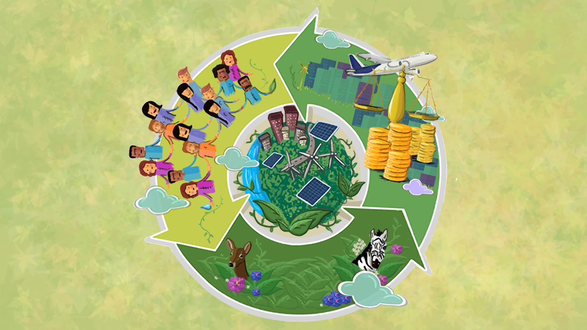

|
Este término se aplica al desarrollo económico y social,
en forma eficiente y racional para satisfacer las necesidades presentes
sin poner en peligro el agotamiento de los recursos naturales y garantizar
así que las generaciones futuras puedan seguir utilizando los recursos para
satisfacer sus necesidades.
El termino desarrollo sustentable tiene sus raíces en el concepto de
ecodesarrollo acuñado por Ignacy Sachs, en el debate acerca de los “límites
del crecimiento” surgido en 1972, y en la Conferencia de las Naciones Unidas
sobre el Medio Ambiente en Estocolmo. |
 |